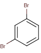

This set of functions deal with polarizability and partial charges.
Example
Compute charge for each atom in the given molecule:

charge()
The calculation returns the following numbers: 0; -0.15; -0.15; -0.15; -0.15; -0.15; 0; -0.15
List of Charge Functions
| Name | License | Description | Return value | Parameters | Examples |
|---|---|---|---|---|---|
| atomicPolarizability atomPol pol polarizability |
Charge Plugin Group | calculates atomic polarizability | the polarizability values |
|
Molecule Context (All)atomicPolarizability(0) returns the polarizability of atom
0 of the input molecule
atomicPolarizability(2, "7.4")returns the polarizability of atom
2 of the major microspecies taken at pH
7.4
|
| averagePolarizability averagePol avgPol |
Charge Plugin Group | calculates average molecular polarizability component considering 3D geometry | the polarizability value |
|
Molecule Context (All)averagePolarizability() returns the average polarizability component of the input molecule
averagePolarizability("7.4")returns the average polarizability component of the major microspecies taken at pH
7.4
|
| axxPol | Charge Plugin Group | calculates principal component of polarizability tensor (a(xx), a(yy), a(zz)) | the principal component of polarizability tensor |
|
Molecule Context (All)axxPol() returns the principal component
a(xx) of polarizability tensor of the input molecule
axxPol("7.4") returns the principal component
a(xx) of polarizability tensor of the major microspecies taken at pH
7.4
|
| ayyPol | Charge Plugin Group | calculates principal component of polarizability tensor (a(xx), a(yy), a(zz)) | the principal component of polarizability tensor |
|
Molecule Context (All)ayyPol() returns the principal component
a(yy) of polarizability tensor of the input molecule
ayyPol("7.4") returns the principal component
a(yy) of polarizability tensor of the major microspecies taken at pH
7.4
|
| azzPol | Charge Plugin Group | calculates principal component of polarizability tensor (a(xx), a(yy), a(zz)) | the principal component of polarizability tensor |
|
Molecule Context (All)azzPol() returns the principal component
a(zz) of polarizability tensor of the input molecule
azzPol("7.4") returns the principal component
a(zz) of polarizability tensor of the major microspecies taken at pH
7.4
|
| charge | Charge Plugin Group | calculates partial charges on atoms for result types "aromaticsystem" / "aromaticring", calculates the sum of partial charges of the atoms in the aromatic system / smallest aromatic ring containing the atom |
the charge values |
|
Molecule Context (All)charge(0) returns the partial charge on atom
0 of the input molecule
charge(2, "pi", "7.4") returns the partial "pi" charge on atom
2 of the major microspecies taken at pH
7.4
|
| molecularPolarizability molPol |
Charge Plugin Group | calculates molecular polarizability | the polarizability value |
|
Molecule Context (All)molecularPolarizability() returns the molecular polarizability of the input molecule
molecularPolarizability("7.4")returns the molecular polarizability of the major microspecies taken at pH
7.4
|
| piOrbitalElectronegativity pOEN |
Charge Plugin Group | calculates atomic pi orbital electronegativity | the pi orbital electronegativity values |
|
Molecule Context (All)piOrbitalElectronegativity(0)returns the pi orbital electronegativity of atom
0 of the input molecule
piOrbitalElectronegativity(2, "7.4")returns the pi orbital electronegativity of atom
2 of the major microspecies taken at pH
7.4
|
| resonantCharge | Charge Plugin Group | calculates partial charges on atoms considering resonance effect for result types "aromaticsystem" / "aromaticring", calculates the sum of partial charges of the atoms in the aromatic system / smallest aromatic ring containing the atom |
the charge values |
|
Molecule Context (All)resonantCharge(0) returns the partial charge on atom
0 of the input molecule considering resonance effect
resonantCharge(2, "pi", "7.4")returns the partial "pi" charge on atom
2 of the major microspecies taken at pH
7.4considering resonance effect
|
| sigmaOrbitalElectronegativity sOEN |
Charge Plugin Group | calculates atomic sigma orbital electronegativity | the sigma orbital electronegativity values |
|
Molecule Context (All)sigmaOrbitalElectronegativity(0)returns the sigma orbital electronegativity of atom
0 of the input molecule
sigmaOrbitalElectronegativity(2, "7.4")returns the sigma orbital electronegativity of atom
2 of the major microspecies taken at pH
7.4
|